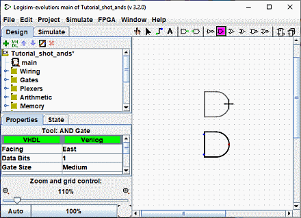
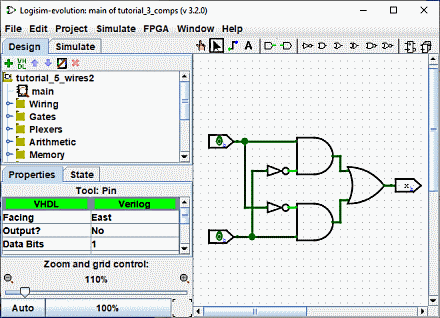
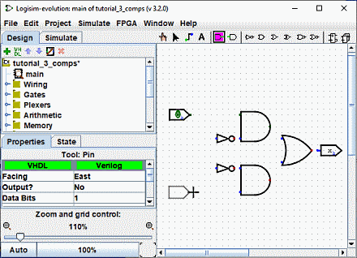

הבא: שלב 0: התמצאות
שלב 1: הוספת שערים
נזכיר שאנו מנסים לבנות את המעגל הבא ב-Logisim.

אני מציע לבנות מעגל על ידי הכנסת השערים תחילה כמעין שלד ואז לחבר אותם
חוטים מאוחר יותר. הדבר הראשון שנעשה הוא להוסיף את שני שערי ה-AND. לחץ על "AND"
כלי בסרגל הכלים ( ,
הכלי הבא אחרון הרשום). לאחר מכן לחץ באזור העריכה שבו אתה רוצה שהשער הראשון ו-AND יעבור. תהיה בטוח
להשאיר הרבה מקום לדברים בצד שמאל. לאחר מכן לחץ שוב על הכלי AND והצב את שער ה-AND השני למטה
זה.
,
הכלי הבא אחרון הרשום). לאחר מכן לחץ באזור העריכה שבו אתה רוצה שהשער הראשון ו-AND יעבור. תהיה בטוח
להשאיר הרבה מקום לדברים בצד שמאל. לאחר מכן לחץ שוב על הכלי AND והצב את שער ה-AND השני למטה
זה.

שימו לב לחמש הנקודות בצד שמאל של שער ה-AND. אלו נקודות בהן ניתן לחבר חוטים. זה קורה שפשוט נשתמש בשניים מהם עבור מעגל ה-XOR שלנו; אבל עבור מעגלים אחרים, אתה עשוי לגלות שיש יותר מ שימושי שני חוטים שעוברים לשער AND. ניתן לשנות את מספר הכניסות במאפיינים "מספר כניסות"
כעת הוסף את השערים האחרים. תחילה לחץ על הכלי "OR" ( );
לאחר מכן לחץ
איפה שאתה רוצה את זה. והצב את שני שערי NOT לתוך הבד באמצעות הכלי "NOT" (
);
לאחר מכן לחץ
איפה שאתה רוצה את זה. והצב את שני שערי NOT לתוך הבד באמצעות הכלי "NOT" ( ).
).

השארתי רווח קטן בין שערי NOT לשערי AND; אם אתה רוצה, עם זאת, אתה יכול להעלות אותם אחד מול השני וחסוך לעצמך את המאמץ לחבר אותם עם חוט מאוחר יותר.
כעת אנו רוצים להוסיף את שני הכניסות x ו-y לתוך הדיאגרמה. בחר את "קלט"
כלי ( ), ומקם את הסיכות
מטה. עליך גם למקם פין פלט ליד היציאה של שער ה-OR באמצעות "פלט"
כלי (
), ומקם את הסיכות
מטה. עליך גם למקם פין פלט ליד היציאה של שער ה-OR באמצעות "פלט"
כלי ( ). (שוב, אני משאיר קצת רווח בין
OR שער ופין הפלט, אך ייתכן שתבחר למקם אותם ממש ליד זה.)
). (שוב, אני משאיר קצת רווח בין
OR שער ופין הפלט, אך ייתכן שתבחר למקם אותם ממש ליד זה.)

אם אתה מחליט שאתה לא אוהב את המקום שבו מיקמת משהו, תוכל לבחור בו באמצעות "עריכה"
כלי ( ) וגרור אותו אל ה
מקום רצוי. לחלופין, תוכל למחוק אותו לחלוטין על ידי בחירה ב| ערוך | → | מחק |
או לחיצה על מקש Delete או מקש Ctrl-X.
) וגרור אותו אל ה
מקום רצוי. לחלופין, תוכל למחוק אותו לחלוטין על ידי בחירה ב| ערוך | → | מחק |
או לחיצה על מקש Delete או מקש Ctrl-X.
כשתמקם כל רכיב במעגל, תבחין שברגע שהרכיב מוצב, לוגיסים
חוזר לכלי "עריכה" ( ) כדי שתוכל להזיז את
רכיב שהוצב לאחרונה או (כפי שנראה בקרוב) חבר את הרכיב לאחרים על ידי יצירת חוטים. אם אתה רוצה
כדי להוסיף עותק של הרכיב שהוצב לאחרונה, קיצור דרך הוא ללחוץ על Ctrl-D כדי לשכפל
הבחירה. (מחשבים מסוימים משתמשים במקש אחר לתפריטים, כמו מקש Command במקינטוש
לחץ על המקש הזה עם מקש D.)
) כדי שתוכל להזיז את
רכיב שהוצב לאחרונה או (כפי שנראה בקרוב) חבר את הרכיב לאחרים על ידי יצירת חוטים. אם אתה רוצה
כדי להוסיף עותק של הרכיב שהוצב לאחרונה, קיצור דרך הוא ללחוץ על Ctrl-D כדי לשכפל
הבחירה. (מחשבים מסוימים משתמשים במקש אחר לתפריטים, כמו מקש Command במקינטוש
לחץ על המקש הזה עם מקש D.)
הבא: שלב 2: הוספת חוטים